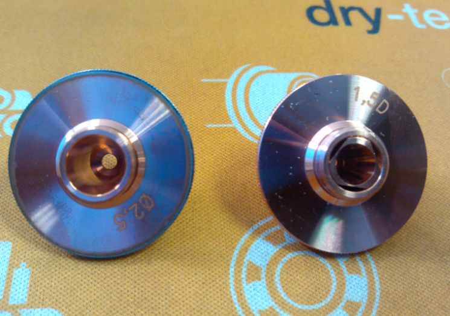
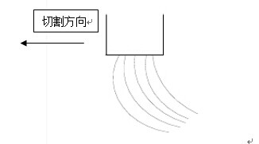
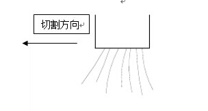

Laser cutting process
Laser cutting is a complex process involving many factors. The following individual aspects can be considered separately:
2.1 Material property
Most ferrous and non-ferrous metals can be cut with laser. Each material responds to CO2 laser (wavelength=10.6u) in its own unique way. How well the material cuts with with the laser depends on its interaction with the wavelength and energy of the laser, which determines the cutting capability, cutting speed and quality.
Generally, there are four material factors affecting the cutting capability:
Surface conditions
Thermal diffusivity and conductivity
Characteristics of fusion and phase change
Reflectivity of the cutting zone
In general, surface treatment of the material, such as aluminum-zinc coating, coating, lamination, rusty spots paint and protective coating etc., have a negative impact on laser cutting.
2.2 Influence of the nozzle on cutting quality
Cutting results will be affected by factors including nozzle type, orifice diameter, intact condition and nozzle height ( the distance between the nozzle tip and workpiece surface).
Nozzle type and orifice diameter selection
At present, the commonly used nozzles are divided into regular type and combination type. Nozzle orifice diameter include: 1.2mm, 1.5mm, 2.0mm, 2.5mm, 3.0mm, 3.5mm, 4.0mm, 4.5mm.
Figure 6- 1
Combination nozzle is generally used for mild steel cutting.

Regular nozzle is generally used for material cutting with nitrogen and air.
In principle, nozzle with small diameter is used for thin sheet cutting and nozzle with large diameter is used for thick sheet cutting.
Cutting with small-diameter nozzle: Thin sheets cutting. When it’s used for thick sheet cutting, the small gas diffusion area will result in unstable cutting.
Cutting with large-diameter nozzle: Cutting on relative thicker sheets as compared to small-diameter nozzle. A larger gas diffusion area, slower gas flow and therefore a more stable cutting process.
Comparison of nozzle orifice diameters:
| Nozzle orifice diameter | Gas flow rate (volume) | Ease of solvent removal |
|---|---|---|
Small |
Fast |
Easy |
Large |
Slow |
Hard |
Influence of the nozzle damage on cutting quality
In the cutting process, when the nozzle collides or scratches against the workpiece, the nozzle get deformed easily.
When the piercing hole bursts or the workpiece is not fully cut, the nozzle is often impregnated with molten material and gets stuck, therefore affecting the cutting quality.
Figure 6- 2
Nozzle tip is severely damaged after collision with the sheet.
Workpieces cut with the damaged nozzle from the picture shown above:

Over-burn on the cut edge of large circle.
Severely deformed small circle.
Negative impacts caused by deformation and impregnation of molten material:
Nozzle center is not aligned with the laser beam
Alignment of the nozzle center with the laser beam is a key factor affecting cutting quality. The influence increases as the sheet gets thicker. Nozzle deformation and impregnation with molten material will affect the alignment directly. For this reason, the nozzle should be stored carefully and installed correctly to avoid collision and deformation.
If the cutting parameters need to be adjusted due to poor nozzle conditions, it is recommended to replace with a new nozzle.
Uneven gas flow
When the assist gas is blown out from the nozzle, uneven air flow will lead to impregnation with molten material or burning, both of which occur only on one side of kerf. This will slightly influence the cutting when the thickness of the sheet is below 3mm. But for sheet with a thickness above 3mm, the cutting will be significantly affected. The sheet can not be cut through sometimes.
Nozzle
Low flow rate on the right side.
High flow rate on the left side.
Influence on cutting at sharp corner
For workpiece with sharp or small corners, over-fusion occurs easily. Thick plates may not be cut through.
Influence on piercing
Unstable piercing when cutting thick plates. Piercing time is difficult to control and over-fusion occurs easily. In addition, piercing parameters are not easy to decide. But influence on thin sheet is only limited.
Influence of the nozzle height on cutting quality
The follow height refers the distance between the nozzle tip and workpiece surface, which is often overlooked during cutting process but plays a significant role on cutting quality.
For regular cutting, the follow height is normally required to range from 0.8mm to 1.2mm.
Follow height too small will lead to nozzle collision with the workpiece surface. Follow height too large will lead to diffused gas flow from the nozzle. This will reduce the concentration and pressure of the assist gas and therefore lead to a lower cutting quality.
Changes in the nozzle height (increase or decrease) will lead to changes in focus position (higher or lower) and therefore influence the cutting quality.
The key factors affecting follow height are:
Metal foreign body on sheet surface or spatter during piercing are detected by the nozzle surface and lead to an increased follow height.
Follow calibration is incorrect.
Damaged components, e.g. ceramic ring, sensor cable etc, which leads to failure of the sensor.
Tilted workpiece or warped sheet due to thermal deformation.
Damaged nozzle, ceramic ring and sensor due to cutting head collision with the workpiece during movement.
Tilted workpiece is detected by the sensor. Cutting failure due to increased nozzle distance from the sheet.
2.3 Influence of the ceramic ring and sealing ring on cutting quality
In the cutting process, the ceramic ring is easy to crack or break when the cutting head collides with the tilted workpiece. When the ceramic ring breaks, the assist gas leakage often occurs. This will lead to insufficient flow of the assist gas and lower cutting quality.
In case of a cracked ceramic ring, the operating personnel should replace it with a new one promptly. When installing the new ceramic ring, make sure that the sealing ring between the ceramic ring and cutting head is firmly compressed and never missing. Otherwise, the assist gas may leak and the cutting quality will be affected.
Sealing ring
2.4 Influence of the cutting head and light path condition on cutting quality
Main components of the cutting head include collimation lens, focusing lens and protective lens. Any lens contamination will affect the light path and consequently the cutting quality.
Scorch on the lens caused by metal particles.
Metal dust or scorch on the lens surface as shown above will affect the laser transmission, reduce the effective cutting power, shift the focus position and consequently affect the cutting quality as seen below:
Visible black spot in the homogeneous red light area indicates that the lens is scorched.
Scorched lens will lead to reduced laser power, slags on workpiece hard to remove and workpiece not fully cut.
Co-axial misalignment of the beam and the nozzle center is also a light path transmission problem. This will lead to cutting failure as shown below:
Figure 6- 13
2.5 Influence of the focus position on cutting quality
For cutting with different materials, the focus position needs to be adjusted according to various cutting process requirements. When the focus position parameters are decided, the +/- direction of the focus position needs to be considered. The focus position on the sheet surface is defined as zero position. Any focus positions below the sheet surface are defined as negative positions. Any focus positions above the sheet surface are defined as positive positions. As shown below:

Generally, the focus position is selected as follows:
| Focus position | Diagram | Characteristics |
|---|---|---|
Zero position: Focus is positioned on the workpiece surface |
Kerf width Nozzle Suitable for thin mild steel sheet below 2mm thickness. Focus is at the upper surface of the workpiece. Therefore, the upper cut edge is smooth, but the lower cut edge is not. |
Negative focus: Focus position below the workpiece surface. |
Kerf width Nozzle Suitable for aluminum, stainless steel, brass workpiece etc. Focus is at the sheet center or lower position. A wider smooth area on the cut edge. Wider kerf width, higher cutting gas flow and longer piercing time in relation to zero position. |
Positive focus: Focus position above the workpiece surface. |
Kerf width Nozzle |
Focus positions is one of the four key factors affecting cutting process. Therefore, each time before cutting, it’s necessary to check if the focus position is set correctly according to the sheet material and process parameters.
Key factors affecting focus position are:
Factors affecting the follow height will affect the focus position.
Lens contamination will lead to abnormal condition of the light path, changes in energy transmission and focus position.
After replacement of collimation lens or focusing lens, the focus position may change. This must be checked by JFY technician.
2.6 Influence of the assist gas on cutting quality
Influence of the assist gas type on cutting process
When selecting assist gas type and pressure, the following aspects should be taken into account:
Generally, oxygen is used for regular mild steel cutting. Low-pressure oxygen is used for piercing and cutting.
Nitrogen is typically used for cutting stainless steel, aluminum and brass etc. Low-pressure nitrogen is used for piercing and high-pressure nitrogen is used for cutting.
Gas purity must meet the cutting requirements.
Liquid oxygen with a purity of 99.95% is used by our company for testing and optimization of cutting parameters.
In daily operation of the machine, the cutting parameters should be referenced to as standard. However, the users often cut parts using gas with lower purity. Therefore, in case of poor cutting quality or cutting failure when our cutting parameters are referenced, the user may increase the gas pressure. It should be noted that poor cutting quality with high gas purity is also possible. Cutting with nitrogen (e.g. stainless steel, aluminum, brass) is a type of high-pressure cutting. For this reason, changes in pressure have limited influence on cutting when in comparison with changes in flow rate. Therefore, flow rate must be ensured while sufficient gas pressure is provided.
Influence of the assist gas purity on cutting quality
1. Influence of insufficient gas purity when cutting mild steel with oxygen:
For thin mild steel sheet (thickness: 1mm-5mm), increase the gas flow rate at cutting when the gas purity is insufficient.
For thick mild steel sheet (thickness: above 6mm), there are strict requirements for gas purity. If the gas purity is insufficient, the cutting quality will be poor or the sheet can not be fully cut.
2. Influence of insufficient gas purity when cutting stainless steel, aluminum and brass with nitrogen
Rough cut edge and poor cutting quality etc. on stainless steel and brass.
Poor cut edge quality and slags that are difficult to remove on aluminum sheet.
Influence of the assist gas pressure on cutting quality
1. Gases facilitate heat dissipation, combustion, removal of molten material and therefore result in a better cut edge quality.
2. Influence of insufficient gas pressure on cutting:
Molten material is generated on the cutting surface or the material can not be fully cut.
Cutting speed can not be increased and thus cutting efficiency is affected.
Figure 6- 15
3. Influence of excessive gas pressure on cutting quality:
Thicker cut edge and wider kerf.
Fusion at cutting positions leads to undesirable cutting quality.
Figure 6- 16
Over-fusion occurs easily on the cut edge of the workpiece with impregnation of molten material. But it’s easy to remove.
In case of excessive gas pressure, the cut edge is easily over-burnt and deep and wavy striations are formed.
Influence of the assist gas on piercing
1. When gas pressure is too low, it’s difficult to pierce through and the piercing duration will be longer.
2. When the gas pressure is too high, burst hole and large fusion accumulation are easy to form at the piercing position.
Figure 6- 17

As a result, a higher gas pressure is required for piercing on mild steel sheet and thin sheet, while a lower pressure is used for piercing on thick sheet. During piercing process of the thick sheet, lower the duty cycle and gas pressure as well as extend the piercing time in case of burst holes.
Factors affecting assist gas:
Assist gas purity: In case of low gas purity, gas pressure should be increased accordingly; in case of high gas purity, gas pressure should be decreased accordingly.
Orifice diameter: At the same given pressure, the smaller the orifice, the higher the flow rate will be; the larger the orifice, the lower the flow rate will be. The flow rate will affect the cutting result and removal of molten material.
Nozzle height: The further the nozzle is from the sheet, the more diffused the gas flow is; the closer the nozzle is to the sheet, the more concentrated the gas flow. The flow rate will affect the cutting result and removal of the molten dross.
Damaged nozzle: If the nozzle tip is damaged, the blown-out gas flow will be uneven and affect the cutting directly.
Ceramic ring and sealing ring: If the ceramic ring and sealing ring are damaged, the gas will leak, therefore affecting the gas pressure and flow rate.
Cutting speed: If the cutting speed is too fast, the molten material can not be blown off effectively by the assist gas. Slag adhesion will built up and cutting failure will occur.
Laser power: If there is laser power loss, higher gas pressure is normally required to remove the molten material.
Focus position: If the focus position is incorrect, the energy of the laser acting on the sheet can not be calculated correctly. Understandably, when the energy is higher, only a low gas pressure will be required; when the energy is lower, a higher gas pressure will be required..
Sheet quality: Poor sheet quality will directly affect cutting results. Sheet with rusty surface will lower the efficiency of oxygen-assisted combustion and removal of molten material.
2.7 Selection of cutting speed
Influence of excessive cutting speed
Excessive cutting speed may lead to cutting failure and back splatter.
Laser cutting through in some regions but not cutting through in some other regions.
Figure 6- 18
Part of the contour is cut though. Other part of the contour is not cut through.
Impregnation of molten material occurs on the workpiece edge.
Rough cut edge with slag adhesion.
Figure 6- 19
Impregnation of molten material on cut edge. Visible angled striations on the lower edge.
Generally, cutting speed too fast, gas pressure too low and power too low will result in insufficient cutting.
Figure 6- 20

Too fast
Cutting direction
Cutting direction
Cutting direction
Too slow
Influence of feed rate too slow
Over-cutting. Rough cut edge.
Wide kerf width. Fusion at sharp corner.
Reduced cutting efficiency.
Generally, cutting speed too slow, gas pressure too high or power too high will result in over-fusion cutting.
Selecting appropriate feed rate
1. Determine if the feed rate should be higher or lower from to the cutting sparks:
If the sparks spread from top to bottom, the feed rate is set properly.
If the sparks are tilted backward, the feed rate is too fast. The cutting head has moved forward before the slags are completely blown out by the assist gas.
If there are only a few concentrated sparks without diffusion, the feed rate is too slow. Too many of the slags are blown away by the assist gas, which results in a rough cut edge.
2. After the feed rate is set to an appropriate value, the cut edge will be presented with smooth striations without dross on the lower area.
2.8 Influence of laser power(PW) on cutting quality
Laser power (PW) is set too low; the laser will not able to cut.
If laser power(PW) is set too high, the whole cut edge will melt.
If laser power (PW) is set to an inadequate value, molten droplets will be generated after cutting.
If laser power (PW) is set to a proper value, the cut edge is good without molten droplets.
2.9 Influence of the lead on cutting quality
The consistency of the cut quality will be affected by the starting, stopping and changing in the direction of machine movement, which makes it necessary to introduce lead in actual cutting.
Types and application range of the leads are shown in the table below:
| Type of lead | Application range |
|---|---|
Right-angle lead |
0.5mm - 3mm(thin sheet) |
Straight lead with an arc |
4mm - 6mm |
Straight tangent lead |
8mm - 16mm |
Recommended lengths of lead are shown as follows:
| Thickness[mm] | Circle diameter<d> [mm] | Length of lead <a> [mm] |
|---|---|---|
1mm - 6mm |
d < 10 |
Start from the center of circle |
d > 10 |
5 |
|
8mm - 12mm |
d < 20 |
Start from the center of circle |
d > 20 |
10 |
|
15mm - 20mm |
d < 30 |
Start from the center of circle |
d > 30 |
15 |
When cutting thick mild steel sheets (≥6mm), the lead should be extended to prevent slags generated by the burst holes from affecting the cutting.
2.10 Acute corner cutting process
Cause of over-burn at acute corner
When cutting an acute corner, the machine axes go through a process of deceleration and acceleration. In the process, the cutting speed changes but the output power of the laser remains consistent. As a result, the laser energy absorbed at the corner is twice the amount compared to cutting on a straight line of the same total length, leading to combustion at the corner caused by overheating.
Acute corner cutting process
In the laser cutting process, try to avoid sharp changes in speed or direction which may cause local overheating on the workpiece and thus affect the cutting quality. In general, acute corners can be processed as below:
1. Radius transition
If there are no special requirements for the acute corner, a small arc with a radius of 1-2mm can be added as transition. This serves as a buffer to slow down the changes in cutting speed and direction. As shown in the figure below:
2.Closed over-cut transition
Add a closed over-cut path at the corner position. As a result, the cutting speed and direction do not change abruptly at the corner. The heat is distributed as even as possible and an acute corner of sharp edges is cut. As shown in the figure below:
2.11 Solution for thermal effect
Laser cutting is a new type of thermal processing technology that involves heat absorption and dissipation. Temperature of the material has a significant effect on the cutting quality. Generally, the laser cutting will be negatively affected when the temperature of the material exceeds 45℃. In order to minimized the negative effects of the temperature changes on cutting, the so-called jump cutting is introduced. As its name suggests, jump cutting refers to a cutting process in which the cutting head jumps to another cutting area when the cutting of a contour within a small cutting area is completed. By doing so, the temperature of the processed material will not increase too much due to overheating in a small area.